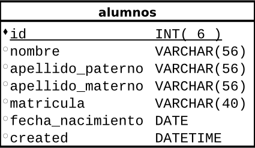

Miguel Angel Marcial Martínez
En la práctica del desarrollo de software resulta muy difícil encontrarse un proyecto donde no se use una base de datos y es que en la mayoría de los casos, son los datos la parte más importante de una aplicación.
A pesar de esto, la mayoría de desarrolladores crean aplicaciones del tipo spaguetti code(código revuelto) agregando código SQL empotrado en distintas partes del proyecto, en el mejor de los casos se usa un ORM (Mapeador de objetos relacionales, object relational mapping) como:
NOTA: La mayoria de estos ORM suelen ser complejos de configurar y por lo regular para cada campo en las tablas se tienen que agregar dos metodos: get(obtener) y set(truncar).
Una librería que le hace la vida feliz a un programador java.
Imaginemos que tenemos una base de datos con la que queremos interactuar, específicamente vamos a probar con un sistema escolar en donde necesitamos registrar alumnos. Ahora imaginemos que la tabla alumnos esta definida como se muestra a continuación:
1 CREATE TABLE alumnos (
2 `id` int(6) NOT NULL auto_increment PRIMARY KEY,
3 `nombre` VARCHAR(56) NOT NULL,
4 `apellido_paterno` VARCHAR(56),
5 `apellido_materno` VARCHAR(56),
6 `matricula` VARCHAR(40),
7 `fecha_nacimiento` DATE,
8 `created` DATETIME
9 );

Lo primero que tenemos que hacer es conectarse con la base de datos:
1 DataBase.config("bd" , "mi_bd");
2 DataBase.config("user" , "username");
3 DataBase.config("password" , "secret");
Ahora solo necesitamos definir un modelo para la tabla alumnos que extienda la clase ModelApp como se muestra a continuación:
1 public class AlumnoModel extends AppModel{
2 }
Listo Asi de fácil :)
Usando el modelo Alumno para interactuar con la base de datos:
1 AlumnoModel alumno = new AlumnoModel();
2 alumno.set(
3 "nombre", "Jon",
4 "apellido_paterno", "Snow",
5 "matricula", "IC2015-0191",
6 "fecha_nacimiento", "1995/06/09"
7 );
8
9 alumno.save();
1 AlumnoModel alumno = new AlumnoModel();
2 alumno.loadByField("matricula", "IC2015-0191");
3 alumno.set("nombre", "Juan");
4 alumno.set("apellido_paterno", "Nieves");
AlumnoModel alumno = new AlumnoModel();
alumno.deleted("1");
| Table of Contents | t |
|---|---|
| Exposé | ESC |
| Full screen slides | e |
| Presenter View | p |
| Source Files | s |
| Slide Numbers | n |
| Toggle screen blanking | b |
| Show/hide slide context | c |
| Notes | 2 |
| Help | h |